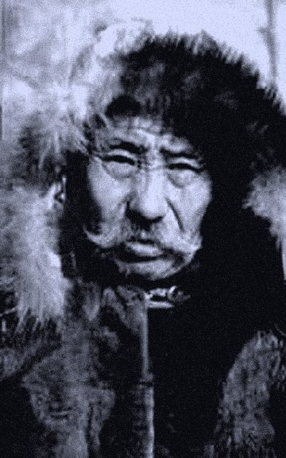
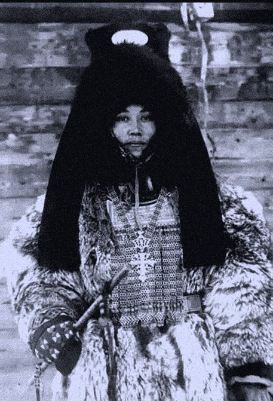
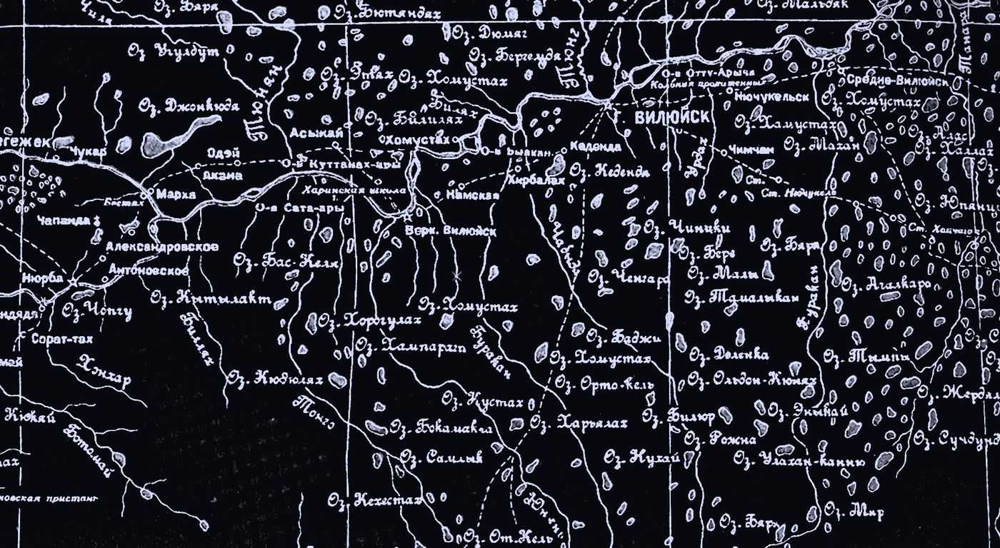
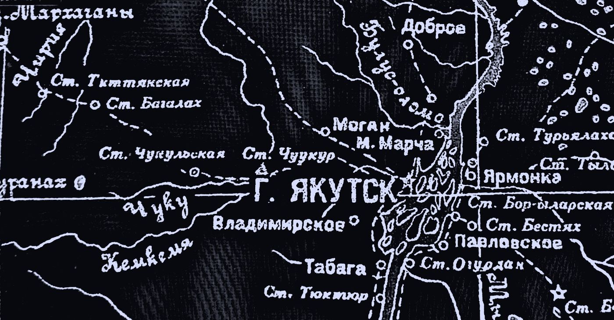

—Дата уточняется
Ближайший ретрит
Даты и программа предстоящих ретритов публикуются в Instagram @uus.oiuun. Чтобы узнать подробности и забронировать место, напишите в WhatsApp.
Узнать подробностиУус Ойуун Дьурантай
Приём в г. Якутске и онлайн по всему миру: консультации, обряды очищения и исцеления. Проводит ретриты и наставничество для практикующих шаманов.
Род
Потомственный шаман Уус Ойуун Дьурантай — потомок великого якутского шамана Никона (Эһээ Ньыыкан) и могущественной удаганки Анны Павловой (Алыһардаах Аана).


Приём ведётся в г. Якутске и онлайн по всему миру.
Принимает людей на консультации, обряды очищения и исцеления, проводит ретриты, наставничества для практикующих шаманов, делает шаманскую атрибутику и амулеты.
Может по приглашению выехать в другие регионы.
Потомок


Республика Саха (Якутия)
Приём ведётся в г. Якутске и онлайн по всему миру. По приглашению шаман выезжает в другие регионы.
Пригласить в свой регион/1
Индивидуальные консультации · лично и онлайн
На личной консультации шаман выслушает ваш вопрос и обратится к духам, чтобы увидеть причины происходящего и подсказать путь. Можно прийти с вопросами о здоровье, семье, роде, работе, жизненном выборе.
Если вы живёте в другом городе или стране, консультация проходит онлайн по видеосвязи. Время согласуется заранее, удобный способ связи обсуждается при записи.
Напишите в WhatsApp — согласуем удобный день и время.
Написать в WhatsApp Записаться онлайнНе уверены, нужно ли вам на приём?
/2
Запись на обряд очищения
Обряд очищения снимает тяжесть, накопившуюся на человеке, его доме или роде, и восстанавливает связь с силами природы. Шаман также проводит обряды исцеления.
Оставьте заявку в WhatsApp или напишите на почту.
Написать в WhatsApp Написать на почту/3
«На путь истинный» и другие групповые мероприятия
4 ноября · с 10:00 · Усадьба Атласовых, Ураhа · 3000 ₽ с человека
Групповой обряд, который помогает найти свою дорогу, обрести ясность и силу идти по ней. Участники собираются в общем круге, а шаман обращается к духам и силам природы.
Шаман проводит групповые обряды для коллективов, семей и сообществ, в том числе по приглашению в других регионах. Расписание ближайших обрядов уточняйте в WhatsApp или в Instagram @uus.oiuun.
/4
Работа с практикующими шаманами
Наставничество предназначено для тех, кто уже идёт по шаманскому пути. Уус Ойуун Дьурантай делится знаниями своего рода, помогает пройти трудные этапы становления, понять свой дар и выстроить правильную практику.
Напишите о себе и своей практике — шаман свяжется с вами.
Написать в WhatsApp/5
Все предстоящие ретриты
Ретрит — это несколько дней на земле Якутии вдали от городской суеты: обряды, практики, общение с шаманом и природой.
Даты и программа предстоящих ретритов публикуются в Instagram @uus.oiuun. Чтобы узнать подробности и забронировать место, напишите в WhatsApp.
Узнать подробности/6
Одежда и шаманская атрибутика
Все изделия шаман создаёт сам, по традициям саха. Возможно изготовление на заказ. Чтобы узнать цену и наличие, нажмите «Заказать».
/7
Распаковка личности · 5 блоков по 20 вопросов · 15–20 минут
Тест помогает понять, что вам по-настоящему нравится делать, в чём ваш талант и как превратить его в доход. В основе — архетипы личности, психологический портрет, учение о пяти стихиях, а по дате рождения считаются бацзы, нумерология и знак зодиака.
Отвечайте быстро, первым чувством. Ответы сохраняются в вашем браузере, поэтому можно прерваться и продолжить позже.
/8
Авторский метод · расширенный разбор натальной карты · 1999 ₽
Полный портрет человека по всем фронтам: психологические тесты и профориентация, западная и ведическая астрология, китайская астрология бацзы и астрокартография. Все методы сведены в один ответ без противоречий: кто вы, в каком деле раскроетесь, где и когда действовать.
Понадобятся дата, время и место рождения. Если время неизвестно, разбор всё равно будет, но без домов, асцендента и линий городов.
Приём в г. Якутске и онлайн по всему миру · выезд в другие регионы по приглашению